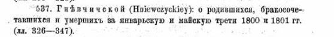

Гневчицы - деревня в Ивановском районе Брестской области.
В разное время Гневчицы входили в состав:
Церковь
Самым ранним упоминанием церкви в Гневчицах можно считать книгу «Mironowicz A.: Biskupstwo turowsko-pińskie w XI-XVI wieku. Trans Humana, 2011». Где в Туровско-пинском бискупстве описываются парафии в XI-XVI в. там и упоминается парафия Гневчицкая.
После подписания в 1596 году Брестской унии церковь стала греко-католической. Это подтверждают сохранившиеся метрические униатские книги в РГИА за 1800-1801 гг.
Памятник

фото сделано в 2020 году
В 1966 году в память о земляках, погибших во время Второй мировой войны, в центре деревни установлен обелиск воинской Славы.
Он представляет собой архитектурное сооружение из бетона в четыре уровня. Четвертый уровень в форме шпиля, сужающегося кверху, увенчан красной звездой, опаясанной венком из колосьев, имеет на своем протяжении конусообразную нишу-углубление. На третьем уровне располагается орден Великой Отечественной войны, а на втором укреплена светлая табличка с надписью "Вечная слава воинам Великой Отечественной войны 1941-1945гг". Первый уровень, самый объемный, содержит списки односельчан, погибших во время войны.
.jpg)
.jpeg)
Если хотите помочь c информацией:
- Можно найти фотографию церкви
- Можно найти книгу «Mironowicz A.: Biskupstwo turowsko-pińskie w XI-XVI wieku. Trans Humana, 2011» и упоминание в ней Гневчицкой парафии